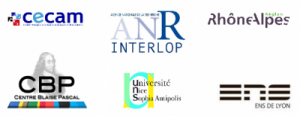

Equilibrium and out-of-equilibrium properties of systems with long-range interactions¶
Location: Salle de réunion LR6 C 023, Centre Blaise Pascal, ENS-Lyon, France
August 27, 2012 - August 31, 2012
Organizing committee:
Stefano Ruffo, ENS de Lyon
Thierry Dauxois, ENS de Lyon
Yan Levin, Instituto de Fisica UFRGS, Porto Alegre
David Mukamel, The Weizmann Institute of Science, Rehovot
Administrative coordination:
Samantha Barendson, CBP, ENS de Lyon, France (samantha.barendson @ ens-lyon.fr)
The workshop is supported by:
Program¶
1 Proposal¶
1.1 Introduction and motivation¶
Although different aspects of systems with long-range interactions have been studied in the past in specific scientific communities, notably astrophysics and plasma physics, this has not constituted a seed for more general theoretical studies. In the last decade or so, it has become progressively clear that the ubiquitous presence of long-range forces needs an approach that integrates different methodologies. This has induced a widespread interest in long-range systems throughout numerous research groups. This workshop will bring together scientists and scholars in statistical physics, astrophysics, accelerator physics and plasma physics in order to explore the novel statistical and dynamical out-of-equilibrium properties of systems with long range interactions. In particular, the discovery of ensemble inequivalence demands for a better understanding of the physical conditions under which it is realized. Moreover, a consistent kinetic theory of long-range systems remains to be developed, which should include the full characterization of the numerically observed quasistationary states. All this justifies the organization of the workshop in 2012: time is ripe to make significant progress in the understanding of the equilibrium and out-of-equilibrium properties of systems with long-range interactions. The format of the workshop aims at reproducing the “old style” CECAM workshops, where a limited group of senior scientists were meeting together with juniors for a full week (or more in some cases). Seminars will be limited in number (not in duration) and placed in the mornings. Afternoons will be fully devoted to informal presentations, discussions and work. Access to the computer cluster at the Centre Blaise Pascal and to the 5000-core ENSL supercomputing center (PSMN) will be guaranteed, in order to put in (numerical) practice some of the emerging ideas. To achieve the goal of a real collaboration the blend of participants must be carefully chosen. The core of the group must be composed of persons who have already collaborated (or disagreed) in the past. Around them, a “halo” formed of fewer qualified persons in somewhat related fields, whose presence might lead to unexpected developments, should be also present. Here we have decided to select a true plasma physicist, Dominique Escande, and an expert of disordered systems, Hidetoshi Nishimori. Escande already collaborated in the past with one of the organisers of this workshop (SR) and we have established with him already a common language (he participated in the Les Houches School quoted in the list of references). Nishimori recently wrote a series of pioneering papers extending the notion of ensemble inequivalence to the random field Ising model and to spin-glass models. However, the workshop will be open to the participation of other scholars in these fields. In particular, some contacts will be established with researchers of the CRAL (Center of Research in Astrophysics in Lyon) working on the simulation of self-gravitating systems.
1.2 State of the art¶
Long-range interactions are found in astrophysics, plasma physics, hydrodynamics, atomic physics, nuclear physics, solid-state physics and disordered systems. However, their statistical and dynamical properties are much less understood than those short-range interactions. If, for sufficiently large distances, the two-body potential decays with a power that is smaller or equal than space dimension, then the interaction is long-range. Our workshop will be focused on the equilibrium and outofequilibrium properties of long-range systems, relying on the tools of statistical mechanics. The aim of equilibrium statistical mechanics is to derive the thermodynamic properties of a macroscopic system from microscopic interactions: the connection between microstates and macrostates is realized through the introduction of statistical ensembles. Different thermodynamic potentials describe situations in which different thermodynamic parameters are used for the characterization of the system. However, it is usually stated, and experimentally verified for many physical systems with short-range interactions, that, as far as macroscopic averages are concerned, i.e. in the thermodynamic limit, the predictions of statistical mechanics do not depend on the chosen ensemble. Ensemble equivalence is related to the fact that, given a sufficient number of macroscopic thermodynamic parameters, the others are fixed in the large volume limit, apart from vanishingly small relative fluctuations. On the contrary, an important feature of long-range systems is that ensembles can be inequivalent. Therefore one of the main objectives of the theoretical studies of these systems is to explore the relation between the various ensembles, probe the conditions under which they become inequivalent and determine the relevant ensemble appropriate for a given Proposal : Equilibrium and out-of-equilibrium properties of systems with long-range interactions experimental setup. Ensemble inequivalence is not merely a mathematical drawback, it is the consequence of fundamental physical properties of long-range systems. Probably, one of the most striking features of long-range systems is the possibility to display negative specific heat in the microcanonical ensemble, which is a consequence of ensemble inequivalence. As far as outofequilibrium properties are concerned, long-range systems show peculiar behaviours. The approach to equilibrium can be extremely slow: it takes place on time scales that increase with system size (while for short-range systems relaxations occur on an intensive time scale). The state of the system during this long transient is quasistationary, since its very slow time evolution allows one to define slowly varying macroscopic observables, like for local equilibrium or quasi-static transformations. The explanation of the widespread presence of quasistationary states relies upon the study of the dynamical properties of systems with long-range interactions. In the continuum limit long-range interacting systems admit a kinetic description in terms of the Vlasov equation. Within this scenario, quasistationary states correspond to stable stationary states of the Vlasov equation. The finite size system relaxes to equilibrium due to corrections of the Vlasov equation, whose study must be performed in the context of appropriately devised kinetic theories. The problem of developing a rigorous statistical mechanics treatment of quasistationary states has recently catalyzed a vigorous debate, but is still far from being solved. A system can be driven out of equilibrium by putting it under the action of an external force or an electric field, or coupled to thermostats at different temperatures. Even in the case in which the bulk dynamics is conserving and local such systems are characterized by long-range correlations, which lead, e.g., to phase transitions and long-range order even in one dimension. In some models, features characteristic of long-range interactions, such as ensemble inequivalence have been detected. In specific cases it can even be shown that, in particular range of parameters where detailed balance is satisfied, the weight of configurations is given by an effective Hamiltonian which has explicit long-range terms. This is certainly a direction to be further explored and that can elucidate the connection between long-range correlations and long-range interactions.
REFERENCES
A. Campa, T. Dauxois and S. Ruffo, Statistical mechanics and dynamics of solvable models with long-range interactions, Physics Reports, 480, 57 (2009).
T. Dauxois, S. Ruffo and L. Cugliandolo Eds., Long-range interacting systems, Les Houches Summer School 2008, Oxford University Press (2009).
A. Campa, A. Giansanti, G. Morigi and F. Sylos Labini, Dynamics and Thermodynamics of Systems with Long Range Interactions: Theory and experiments, satellite conf. of Statphys23, AIP Conf. Proceedings, 965, 122, (2008).
T. Dauxois, S. Ruffo, E. Arimondo, M. Wilkens Eds. Dynamics and Thermodynamics of Systems with Long Range Interactions, Les Houches Winter School 2002, Lecture Notes in Physics, 602, Springer (2002).
F. Bouchet, S. Gupta and D. Mukamel, Physica A, 389, 4389 (2010).
1.3 Objectives¶
Workshop focus on:
Obtaining necessary and sufficient criteria for ensemble inequivalence.
Exploring the conditions for the experimental verification of the effects induced by ensemble inequivalence, like negative specific heat.
Determining the conditions for the evolution towards quasistationary states and characterizing the law of divergence of the timescale with system size.
Checking the stability of quasistationary states under the action of external perturbations.
Developing appropriate kinetic theories for systems with long-range interactions.
Unveiling the possibility to describe long-range correlations in driven systems in terms of long-range interactions.
Last but not least, to develop efficient numerical simulation methods for systems with long-range interactions, including simulations of the Vlasov eqution and other kinetic equations.
1.4 Organisers” biography¶
Thierry DAUXOIS, born in 1967, former student of ENS Lyon got a PhD from Dijon University (France) in 1993. He entered CNRS in 1994. He spent 6 months in Firenze in 1996 and a sabbatical year at Scripps Institution of Oceanography in 1997. His main field of research are nonlinear physics and Statistical physics. He was first interested in applications of solitons to biophysics, before going interested in applications to condensed matter and hydrodynamics. In the last 10 years, his interests were mainly focused in the dynamic and statistical mechanics of systems with long-range interactions. In parallel, he developed theoretical and experimental studies of internal gravity waves in stratified fluids with applications to physical oceanography. He was at the head of the graduate studies (M2) of ENS Lyon for physics from 2005 to 2011. He is chairman of the CNRS committee for theoretical physics (Section 02) from 2010 to 2012 and will be director of the Physics Laboratory at ENS from 2012 to 2015.
Yan LEVIN received B.S. degree from Carnegie Mellon University in 1987, and Ph.D. from University of California at Berkeley in 1992. His thesis work was on fluctuation effects in lattice models of microemulsions. After this he spent two years as a postdoctoral associate with Michael E. Fisher at University of Maryland, developing theories of Coulombic criticality. In 1994 he moved to Porto Alegre, Brazil where he is a Professor of Physics. He is also a senior associate at ICTP, Trieste, Italy. Dr. Levin’s primary research interests are in statistical mechanics of systems with long range interactions such as: magnetically confined plasmas, self-gravitating systems, electrolytes, polyelectrolytes, and charge stabilized colloidal suspensions.
David MUKAMEL
Date of birth: Dec. 24,1945
Education:
1966 B.Sc. Hebrew University
1970 M.Sc. Weizmann Institute of Science
1973 Ph.D. Weizmann Institute of Science
Employment:
2/69 - 8/70: Nuclear Research Center, Negev, Beer-Sheva.
9/73 - 9/75: Research Associate, Dept. of Physics, Brookhaven National Laboratory.
9/75 - 9/77: Visiting Fellow, Dept of Chemistry, Cornell University.
3/77 - 9/79: Senior Scientist, Dept. of Electronics, Weizmann Institute of Science.
9/79 - 4/84: Associate Professor, Dept of Nuclear Physics, The Weizmann Institute of Science.
4/84: Professor, Department of Nuclear Physics, Weizmann Institute of Science.
Professional Activities:
1985 – 1987: Member of the Editorial Board, Journal of Statistical Physics.
1/91 – 1/02: Member of The National Council of Higher Education, Israel.
Proposal : Equilibrium and out-of-equilibrium properties of systems with long-range interactions
9/95 – 5/02: Dean, Faculty of Physics, The Weizmann Institute of Science.
2000 - 2006 Associate Editor, The European Physical Journal B.
2002: Member of IUPAP Comission on Statistical Physics.
2002 - 2006 Member of the Editorial Board, Journal of Statistical Physics.
2004: Member of the Editorial Board, Journal of Statistical Mechanics: theory and experiment.
2005: Chairman of IUPAP Comission on Statistical Physics.
2010: Member of the Board of Scientific Directors, Journal of Statistical Mechanics: theory and experiment.
Research Activity:
Active in the general areas of statistical physics and condensed matter physics. Carried out theoretical research on phase transition symmetry and symmetry breaking in macroscopic systems and other collective phenomena. Particularly in magnetic systems and liquid crystals. More recently engaged in studies of collective behavior of driven systems far from thermal equilibrium, systems with long range interactions, and in studies of statistical properties of DNA and other biopolymers.
Honors:
1969 The Miphal Hapais Prize
1972 The M. Landau Prize
1974 The J.F. Kennedy Prize
1978 Sara Zinder Leedy Memorial Award
1977 Keren Bat-Sheva de Rotschild Prize
1985 The Jeanette and Samuel Lubell Prize
1978 Holder of the Heiny Glasberg Career Development Chair
1992 Holder of the Harold J. and Marion F. Green Professorial Chair
Stefano RUFFO, born in 1954, got the « Laurea » in Physics from Florence University (Italy) in 1977.
Before obtaining his permanent position as an assistant professor at Pisa University (1981), he got a fellowship from the National Institute of Nuclear Physics in Pisa (1978-1981). From 1987 to 1991 he has been an associate professor in condensed matter physics at the University of Basilicata. He moved to the Faculty of Engineering, University of Florence, in 1991. In 2011 he became full professor. His main fields of research are nonlinear dynamics and statistical physics, specfically: hamiltonian dynamics; cellular automata; coupled map lattices and space-time chaos; long-range interactions. He has studied applications of physics to biology: immune system modeling, DNA models. He has published about 140 papers in international refereed journals. He has been an advisor of numerous master and PhD Thesis in Italian and foreign Universities. He has visited several foreign institution: Oxford University (UK), CPT-CNRS Marseille (FR), ENS de Lyon (FR), Berkeley University (USA), Kyoto University (JP). He is a member of the Italian Physical Society and a referee a several international journals. He is an editor of Communications in Nonlinear Science and Numerical Simulations (Elsevier) and an associate editor of Physica A (Elsevier). He is the chairman of the C3 (Statistical Physics) commission of the IUPAP for the term 2011-13. He is Weston visiting professor at the Weizmann Insitute of Science (2010-11) and Chaire
d’Excellence at ENS de Lyon (2011-12).
2 Participant List¶
Family name |
First name |
Institution |
|---|---|---|
ALASTUEY |
Angel |
Ecole normale supérieure de Lyon, France |
BACHELARD |
Romain |
CePOF, Universidade de São Paulo, Brazil |
BARBARA |
Bernard |
Institut Néel CNRS, Université Joseph Fourier, Grenoble, France |
BARRE |
Julien |
Laboratoire J.A. Dieudonné Université de Nice - Sophia Antipolis, France |
BENETTI |
Fernanda |
UFRSG, Porto Alegre, Brazil |
BOUCHET |
Freddy |
CNRS-ENS de Lyon, France |
BRENIG |
Léon |
Université libre de Bruxelles, Belgium |
CAMPA |
Alessandro |
Istituto Superiore di Sanità, Roma, Italy |
CHAFFI |
Yassin |
Université libre de Bruxelles, Belgium |
DE BUYL |
Pierre |
Université libre de Bruxelles, Belgium |
ESCANDE |
Dominique |
CNRS-Université de Provence, Marseille, France |
FANELLI |
Duccio |
Università degli Studi di Firenze, Italy |
GUPTA |
Shamik |
Ecole normale supérieure de Lyon, France |
JOYCE |
Michael |
LPNHE, Université Pierre et Marie Curie, Paris, France |
LAURIE |
Jason |
Ecole normale supérieure de Lyon, France |
MACIEL |
João Marcos |
Instituto de Física, Universidade de Brasília, Brazil |
MARCOS |
Bruno |
Laboratoire J.A. Dieudonné Université de Nice - Sophia Antipolis, France |
MORAND |
Jules |
LPNHE, Université Pierre et Marie Curie, Paris, France |
NARDINI |
Cesare |
Università degli Studi di Firenze, Italy and ENS de Lyon, France |
NISHIMORI |
Hidetoshi |
Department of Physics, Tokyo Institute of Technology, Japan |
NUNES TELES |
Tarcisio |
Universidade Federal do Rio Grande do Sul, Brazil |
PAKTER |
Renato |
FRSG, Porto Alegre, Brazil |
PATELLI |
Aurelio |
Università degli Studi di Firenze, Italy |
ROCHA FILHO |
Tarcisio Marciano |
Instituto de Física, Universidade de Brasília, Brazil |
SILVESTRE |
Cinthia Helena |
Instituto de Física, Universidade de Brasília, Brazil |
TANGARIFE |
Tomas |
Ecole normale supérieure de Lyon, France |
TOUCHETTE |
Hugo |
School of Mathematical Sciences, Queen Mary University of London, UK |
VENAILLE |
Antoine |
Ecole normale supérieure de Lyon, France |
YAMAGUCHI |
Yoshiyuki |
Kyoto University, Japan |